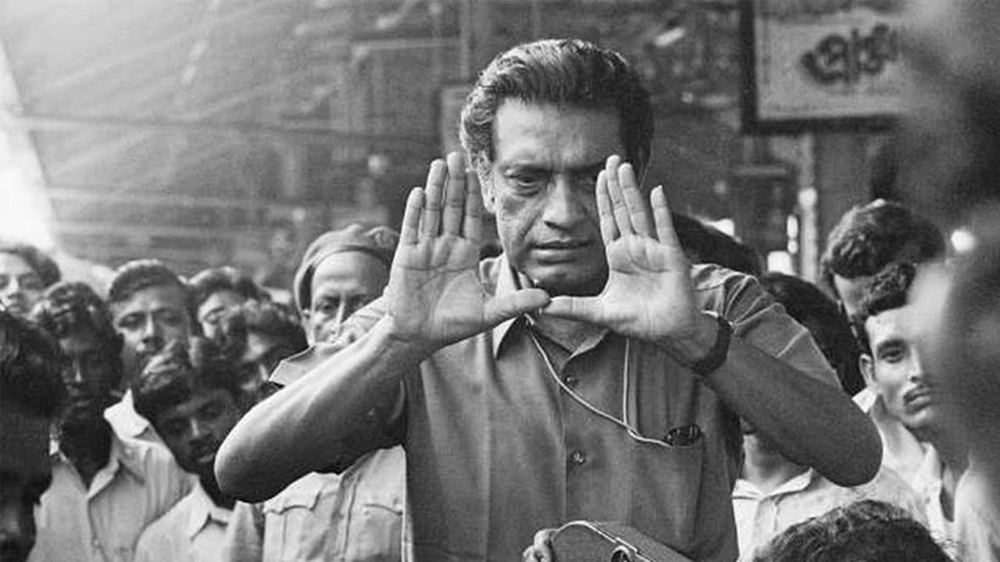
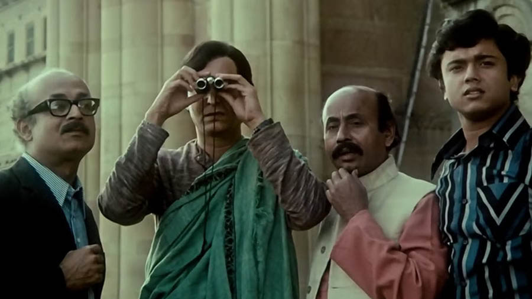
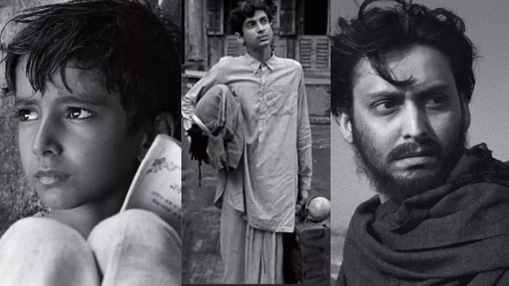

Filmography
A list of Satyajit Ray's most famous films.
| Year | Film Title | Notes |
|---|---|---|
| 1955 | Pather Panchali | First film of the acclaimed Apu Trilogy. |
| 1956 | Aparajito | Second film of the Apu Trilogy. |
| 1958 | Jalsaghar (The Music Room) | A drama about a declining aristocrat. |
| 1959 | Apur Sansar (The World of Apu) | Final film of the Apu Trilogy. |
| 1960 | Devi (The Goddess) | Explores faith, superstition, and tradition. |
| 1963 | Mahanagar (The Big City) | Explores women's independence and changing social values. |
| 1964 | Charulata | A nuanced drama about loneliness and relationships. |
| 1968 | Goopy Gyne Bagha Byne | A fantasy musical adventure about two musicians. |
| 1970 | Pratidwandi (The Adversary) | Examines unemployment and political unrest. |
| 1977 | Shatranj Ke Khilari (The Chess Players) | A historical drama set in nineteenth-century India. |
| 1991 | Agantuk (The Stranger) | Explores identity, civilization, and human values. |


